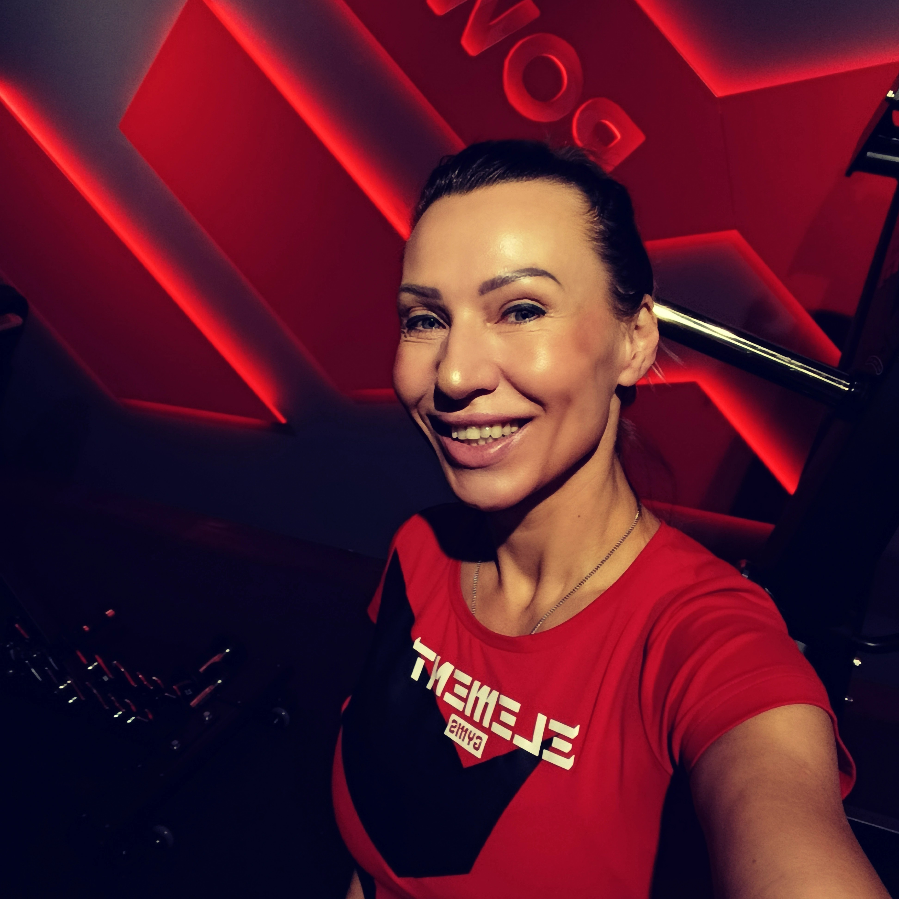
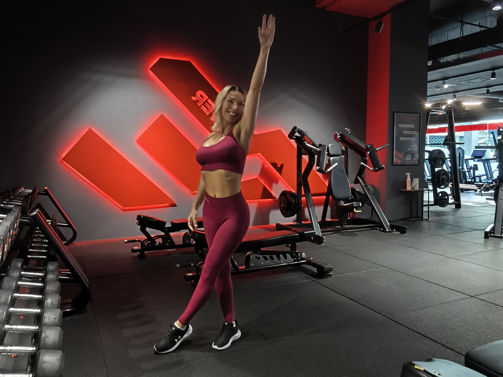
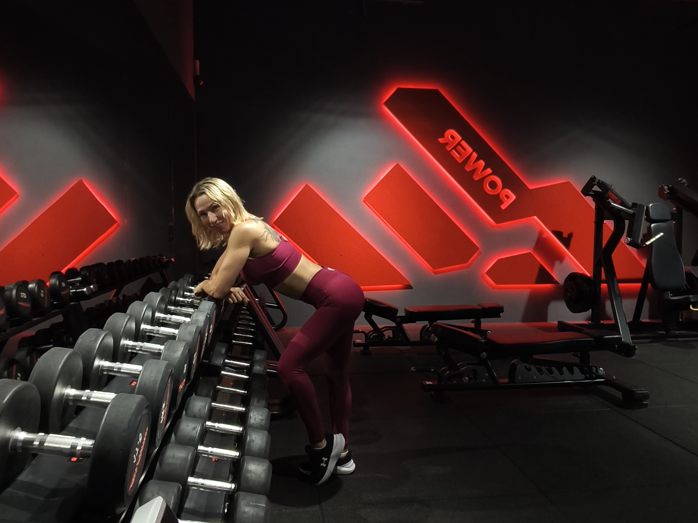
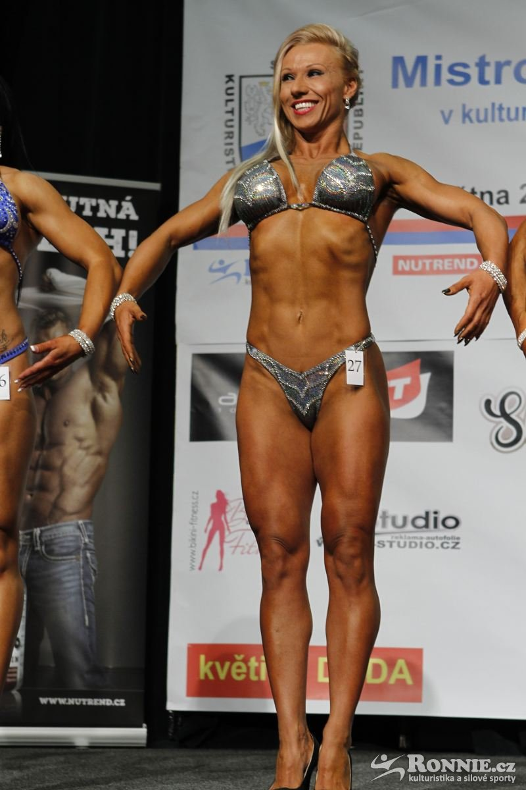
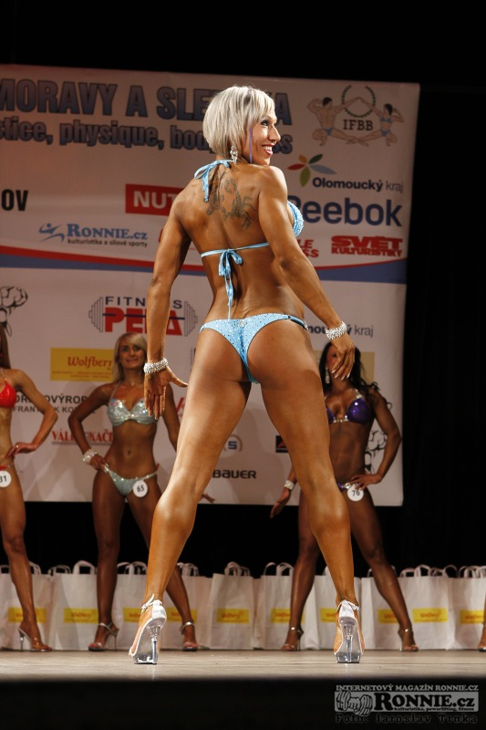
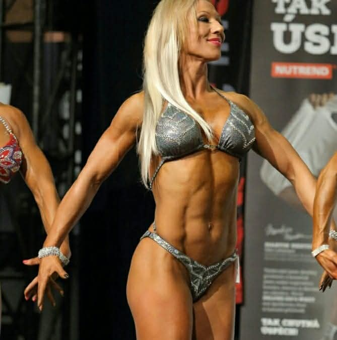
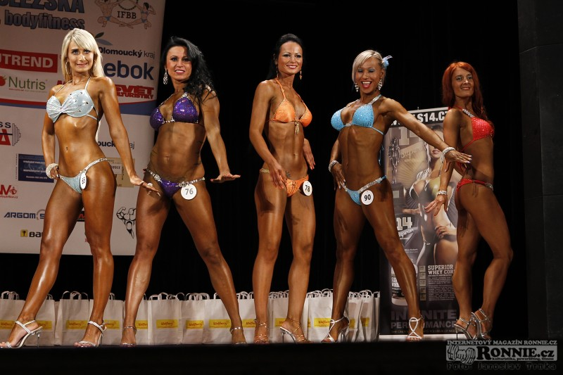

Individuální přístup ke korekci pohybového aparátu, obnově mobility a budování síly — pro klienty s zdravotním zaměřením i pro závodní sportovce.
Objednat úvodní konzultaci
Jmenuji se Simona Dřímalková a už téměř 27 let provázím klienty světem fitness. Moje cesta začala, když jsem jako dvacetiletá získala první trenérskou kvalifikaci — a od té doby své znalosti a dovednosti neustále prohlubuji.
Jsem certifikovaná osobní fitness trenérka a instruktorka řady oblíbených skupinových lekcí — od dynamického TRX a formujícího pilates (včetně úrovní essential, intermediate a advanced) přes energický step aerobik a klasický aerobik, efektivní posilování s různými pomůckami a zábavné cvičení s dětmi všech věkových kategorií až po osvěžující aqua aerobic, ladné tai chi a posilování středu těla, které je základem pro zdravý pohyb.
Mou vášní je pomáhat lidem s bolestmi zad. Proto se specializuji na metody, jako je cvičení dle přední české fyzioterapeutky Ludmily Mojžíšové, významné osobnosti české rehabilitace 20. století, a dále se věnuji SM systému. Kromě korekcí pohybového aparátu — bederní lordózy či hrudní kyfózy — spojuji zdravotní přístup se zkušenostmi z přípravy závodních sportovců na soutěže.
Vedu jak běžné klienty se zdravotním zaměřením, tak připravuji sportovce na závody. Ať už řešíte dlouhodobé potíže s pohybovým aparátem, nebo se chystáte na start, najdeme společně cestu, která odpovídá vašemu tělu a cíli.

Provázím klienty od korekce pohybu přes tréninkový plán až po zdravou výživu — vždy s ohledem na vaše zdraví a cíl.
Odborné posouzení a korekce problémů s pohybovým systémem, individuální vedení při cvičení, skupinové lekce a kondiční příprava. Specializuji se na cvičení pro klienty s bolestmi zad a kloubů.
Plány zaměřené na zlepšení maximální, vytrvalostní, rychlostní i výbušné síly, nárůst svalové hmoty, redukci tuku, zlepšení pohyblivosti, prevenci údazů a podporu dlouhodobého zdraví.
Odborné rady a individuální stravovací plány s cílem zlepšit zdraví a pohodu — ať už je cílem hubnutí, nabírání svalů, nebo řešení zdravotních potíží skrze stravu. Pomohu vám s orientací v potravinách a s dlouhodobou změnou životního stylu.
Klienta provázím krok za krokem, od obnovy pohyblivosti až po plnohodnotný silový trénink. Každá fáze navazuje na předchozí, aby byl pokrok bezpečný a dlouhodobě udržitelný.
První krok s klientem — zaměření na celkový zdravotní stav a obnovu mobility klíčových kloubů, především kyčlí, lopatek a ramen.
Číst více →Jak využívám izometrické cviky ke zpevnění, aktivaci svalů a přípravě na větší zátěž bez rizika zranění.
Číst více →Propojení mobility a izometrie do plnohodnotného silového tréninku pro budování kondice, svalů a výkonu.
Číst více →Fotky z tréninků a výsledky ze závodů — pro přehled o mé praxi.





Krátké texty vysvětlující můj přístup — postupně je můžete rozšiřovat o další.
1. fáze mé metodiky — obnova pohyblivosti klíčových kloubů.
Otevřít článek →Napište mi a domluvíme si termín, který vám bude vyhovovat.
KOLO-ŽIVOTA, Přerov, 750 02